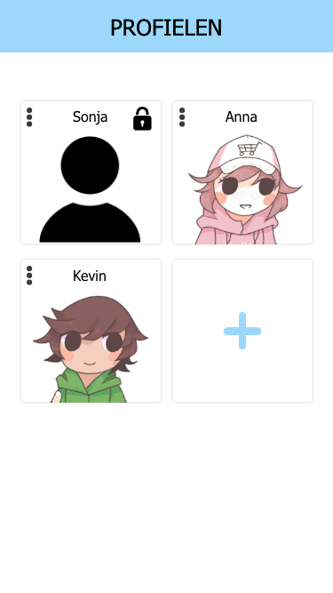
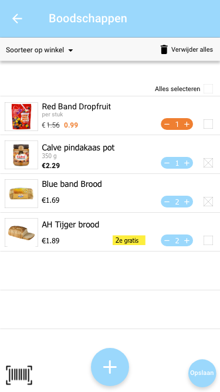
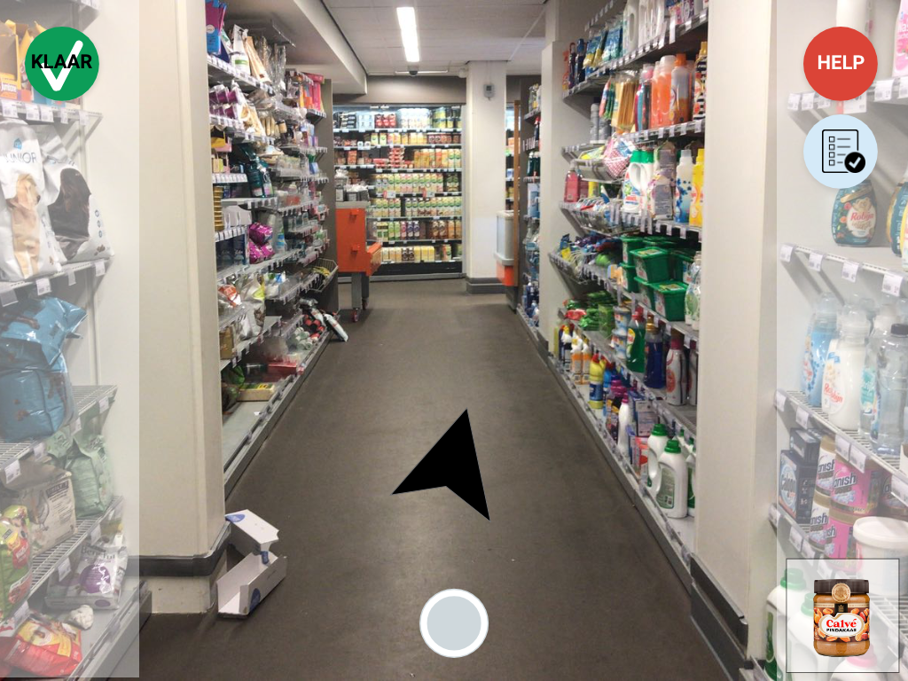
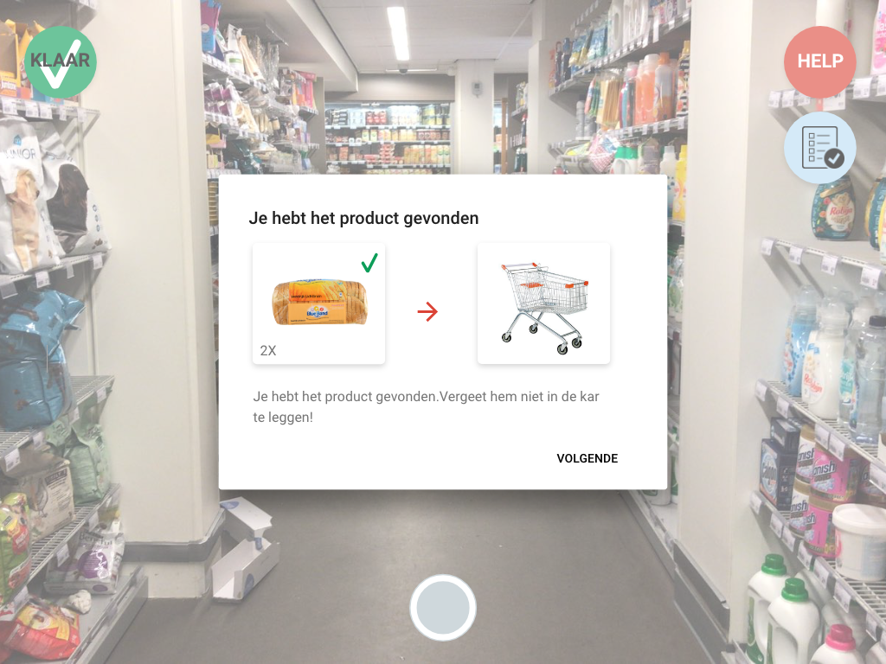

BoodschApp
Dit project is gedaan naar aanleiding van het vak ‘Context-aware design. BoodschApp is een app die gebruikt wordt bij het doen van de boodschappen. Het verbetert de ervaring van de ouder en hun kind.


Dit project is gedaan naar aanleiding van het vak ‘Context-aware design. BoodschApp is een app die gebruikt wordt bij het doen van de boodschappen. Het verbetert de ervaring van de ouder en hun kind.
Nog voordat je naar de supermarkt gaat, weet je als ouder ongetwijfeld dat je kind meenemen een slecht idee is. Kinderen vinden het niet leuk en maken dit meestal bekend door middel van een driftbui of ander onhandelbaar gedrag. Dit ruineert vervolgens weer de ervaring van de ouder. Ze moeten hun aandacht verdelen tussen hun kind en de boodschappen en als gevolg daarvan vergeten ze een paar producten. Ook duurt het veel langer dan normaal om de boodschappen te doen wanneer je je kind meeneemt.
Het doel hier is om een app te maken voor de supermarkt, wij hebben gekozen voor Albert Heijn, dat de ervaring van de ouder en hun kind verbeterd. Deze app moet de kinderen motiveren om te helpen met de boodschappen, ervoor te zorgen dat de ouders geen producten vergeten en de ouders ook helpen om hun kind in de gaten te kunnen houden.
Na wat onderzoek gedaan te hebben, inclusief interviews met de doelgroep, werden de volgende user needs en wensen verkregen:
Dit zijn de user needs die aan de applicatie toegepast zijn. Een ander resultaat die tijdens de interviews naar voren was gekomen was dat de meeste ouderen het liefst gebruik maken van computers.
Met de user needs en de informatie die uit de interviews naar voren zijn gekomen is de boodschApp gemaakt. Maar de app is niet het enige dat voor dit project gemaakt is. Er is voor de kinderen ook een programma gemaakt om in de supermarkt te gebruiken. Deze programma vindt je op de tablet die door de supermarkt aangeboden wordt. Het helpt de kinderen hun weg naar het gewenste product te vinden, bij het scannen en helpt hun om hun ouders te laten weten waar ze zich bevinden en zo te voorkomen dat ze verdwalen. Voor elke product krijgen ze punten die vervolgens op hun profiel gezet wordt. Dit is waar de app gebruikt wordt.
De app bevat verschillende profielen. Er is een profiel voor de ouders en voor de kinderen. De ouders gebruiken hun profiel om een boodschappenlijst te maken, de producten te scannen en hun kinderen in de gaten te houden. De kinderen gebruiken hun profiel om nog meer punten te winnen door spellen te spelen en verschillende recepten te bereiden.
   